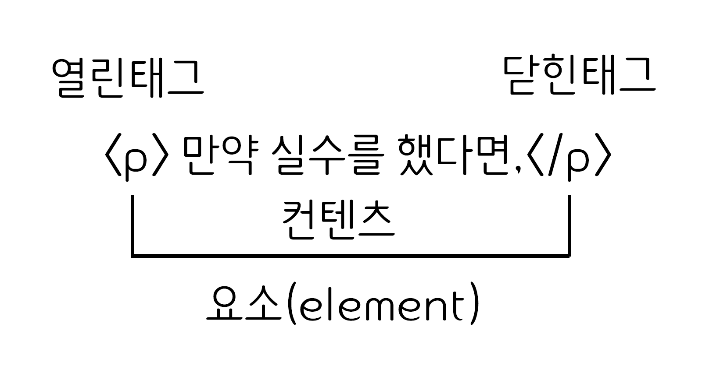

HTML
HTML(HyperText Markup Language)은 웹 문서를 표현하기 위한 하이퍼텍스트 마크업 언어입니다.
하이퍼텍스트란 문서에서 다른 문서로 이동하는 것을 말하며, 마크업이란 태그를 사용하여 콘텐츠의 의미를 부여하는 것을 말합니다.
HTML (Hypertext Markup Language,하이퍼텍스트 마크업 언어)는 프로그래밍 언어는 아니고, 우리가 보는 웹페이지가 어떻게 구조화되어 있는지 브라우저로 하여금 알 수 있도록 하는 마크업 언어입니다.
태그(tag)
태그는 HTML에서 정보를 전달하는 방식을 의미합니다.
- 열린 태크(Opneing tag) : 이것은 요소의 이름과 열고 닫는 꺽쇠 괄호로 구성됩니다. 요소가 시작부터 효과가 적용되기 시작합니다.
- 닫는 태크(Closing tag) : 이것은 요소의 이름 앞에 슬래시(/)가 있는 것을 제외하면 열린 태크와 같습니다. 이것은요소의 끝에 위치합니다. 닫는 태그를 적어주지 않는 것은 흔한 초심자의 요류이며, 이것은 이상한 결과를 낳게됩니다.
- 내용(Content) : 요소의 내용이며, 이 경우 단순한 단순한 텍스트입니다.
- 요소(Element) : 열린 태그, 닫는 태그, 내용을 통틀어 요소라고 합니다.
속성(Attributes)
HTML 속성은 태그에 기본 기능 및 유형을 설정하고, 태그의 동작으로 제어하기 위한 용어입니다.

- 요소 이름 다음에 바로 오는 속성은 요소 이름과 속성 사이에 공백이 있어야 되고, 하나 이상의 속성들이 있는 경우엔 속성 사이에 공백이 있어야 합니다.
- 속성 이름 다음엔 등호(=)가 붙습니다.
- 속성 값은 열고 닫는 따옴표로 감싸야 합니다.
요소(Element)
요소는 HTML을 구성하는 가장 기본 단위입니다.
태그의 시작태그와 끝나는 태그 사이의 범위를 요소라고 합니다.
주석
주석 표시는 프로그램에 영향을 미치지 않으며, 설명이나 메모를 목적으로 사용합니다.
<!-- 주석표시 -->;
블록요소 / 인라인요소
블록요소는 박스, 인라인 요소는 텍스트를 의미합니다.
- 블록 엘리먼트(Black Element)
- 독립된 박스 영역으로 한 줄에 하나에 블록 요소만 표현 할 수 있습니다.
- 블록 요소에는 블록 요소와 인라인 요소를 포함 할 수 있습니다.
- <div>, <p>, <ul>, <li>, <hr>, <address>
- 인라인 엘리먼트(Inline Element)
- 독립된 텍스트 영역으로 한 줄에 여러개의 인라인 요소를 표현할 수 있습니다.
- 인라인 요소에는 블록 요소가 포함 될 수 없지만 인라인 요소는 포함 할 수 있습니다.
- <span>, <a>, <img>, <input>, <buttom>, <br>
DTD 선언
웹 문서를 제작하기 위해서는 웹 문서 유형을 설정해야 합니다.
DTD(Document Type Declaration)을 설정하지 않거나 잘못 설정하면 브라우저에 따라 화면이 다르게 나오거나 렌더링이 달라지기 때문에 독타입을 설정해야 합니다.
<!-- HTML 4.01 Strict -->
<!DOCTYPE HTML PUBLIC "-//W3C//DTD HTML 4.01//EN" "http://www.w3.org/TR/html4/strict.dtd">
<!-- HTML 4.01 Transitional -->
<!DOCTYPE HTML PUBLIC "-//W3C//DTD HTML 4.01 Transitional//EN" "http://www.w3.org/TR/html4/loose.dtd">
<!-- HTML 4.01 Frameset -->
<!DOCTYPE HTML PUBLIC "-//W3C//DTD HTML 4.01 Frameset//EN" "http://www.w3.org/TR/html4/frameset.dtd">
<!-- XHTML 1.0 Strict -->
<!DOCTYPE html PUBLIC "-//W3C//DTD XHTML 1.0 Strict//EN" "http://www.w3.org/TR/xhtml1/DTD/xhtml1-strict.dtd">
<!-- XHTML 1.0 Transitional -->
<!DOCTYPE html PUBLIC "-//W3C//DTD XHTML 1.0 Transitional//EN" "http://www.w3.org/TR/xhtml1/DTD/xhtml1-transitional.dtd">
<!-- XHTML 1.0 Frameset -->
<!DOCTYPE html PUBLIC "-//W3C//DTD XHTML 1.0 Frameset//EN" "http://www.w3.org/TR/xhtml1/DTD/xhtml1-frameset.dtd">
<!-- XHTML 1.1 -->
<!DOCTYPE html PUBLIC "-//W3C//DTD XHTML 1.1//EN" "http://www.w3.org/TR/xhtml11/DTD/xhtml11.dtd">
<!-- html5 -->
<!DOCTYPE html>
언어 속성 설정
콘텐츠의 언어를 인식하고 언어 정보를 추출하는데 사용합니다.
미리 언어를 설정하면 효율성이 더 좋아집니다.
<!-- HTML5 -->
<html lang="ko">
<!-- HTML4-->
<html xmlns="http://www.w3.org/1999/xhtml" xml:lang="en">
문서 구조
HTML는 구조는 html요소 안에 head와
body로 이루어져 있습니다.
- HTML 구조는 독타입 선언을 해주어야 하나의 웹 문서가 완성됩니다.
- HTML 문서는 상하 관계가 존재하는 계층적인 구조로 되어있습니다.상위에 있는 요소와 하위에 있는 요소는 부모 자식 관계로 표현하며, 이러한 구조를 DOM 구조라고 합니다.
- HEAD 요소에는 제목, 사이트 정보, 스크립트, 스타일시트, 메타 정보등을 제공합니다.
- BODY 요소에는 문서 본문에 해당하는 콘텐츠 영역입니다.,
<!DOCTYPE html>
<html lang="ko">
<head>
</head>
<body>
</body>
</html>
웹 표준과 웹 접근성
- 웹 표준이란 표준화 단체인 W3C(World Wide Consortium)가 권고한 표준안에 따라 웹 페이지를 제작하는 기법을 의미합니다. 웹 표준의 궁극적인 목적은 웹사이트에 접속한 사용자가 어떠한 운영체제나 브라우저를 사용하더라도 동일한 결과를 보이게 하는 것 입니다.
- 웹 접근성이란 장애인, 고령자 등 모든 사용자가 어떠한 기술이나 환경에서도 전문적인 능력 없이 웹사이트에서 제공하는 모든 정보를 동등하게 접근하고 이해할 수 있는 권리입니다.
HTML5에 새롭게 추가된 태그
구조를 기술하기위해 추가된 태그
<section>태그는 문서의 섹션을 의미하며 h1, h2, h3, h4, h5, h6 요소와 함께 문서의 구조를 기술하기 위해서 사용한다.<article>태그는 블로그 글이나 신문 기사와 같이 독립적인 문서를 의미한다.<aside>태그는 본문페이지와 연관이 작은 추가적인 콘텐츠를 의미한다.<hgroup>태그는 섹션의 헤더를 의미한다.<header>태그는 소개나 네비게이션 영역을 나타낸다.<footer>태그는 섹션의 푸터를 의미하며 저자나 저작권등의 정보를 표시한다.<nav>태그는 네비게이션을 위한 섹션을 의미한다.<figure>태그는 본문에서 참조할 수 있는 독립적인 사진과 같은 콘텐츠를 의미한다.<figcaption>태그는 figure 요소의 캡션을 제공할 때 사용한다. 선택사항이다.
새로운 용도로 추가된 태그
<video>,<audio>태그는 멀티미디어 콘텐츠를 사용하기위한 요소이고 API를 제공하여 콘텐츠를 제어할 수 있도록 하고 있다.<source>태그는 video, audio 요소에서 사용할 미디어 파일을 기술한다.<track>태그는 video 요소의 텍스트 트랙을 나타낸다.<embed>태그는 플러그인 콘텐츠를 표현한다.<mark>태그는 참조를 위한 표시를 하기 위해 사용한다.<progress>태그는 진행상황을 표기하기 위해 사용한다.<meter>태그는 측정값을 표시하기 위해 사용한다.<time>태그는 날짜나 시간을 표시하기 위해 사용한다.<data>태그는 기계가 읽어들이는 데이터를 표시한다(WHATWG HTML).<ruby>,<rt>,<rp>태그는 루비 표현을 위해 사용한다.<bdi>태그는 좌에서 우, 우에서 좌로 기술되는 언어를 표기할 때 사용한다.<wbr>태그는 개행을 할 수 있다는 표시를 할 때 사용한다.<canvas>태그는 비트맵 그래픽을 표현하기 위해서 사용한다.<command>태그는 사용자 수행 명령을 기술한다.<details>태그는 사용자의 인터랙션에 의해서 보여지는 추가적인 정보를 나타낸다.<summary>태그는 detail 요소의 요약을 제공할 때 사용한다.<datalist>태그는 input 요소의 list 속성으로 연결해서 콤보박스를 표현한다.<keygen>태그는 생성된 키 쌍을 나타낸다.<output>태그는 출력내용을 표현한다.
HTML5에 없어진 태그
<acronym>태그는 생략된 글자나 약어를 표시하는데 사용합니다.<applet>태그는 웹 페이지에 자바 애플릿을 삽입하는 데 사용합니다.<basefont>태그는 문서의 기본 폰트, 사이즈, 종류를 설정합니다.<big>태그는텍스트를 한단계 크게 만듭니다.<cente>태그는 가운데 정렬에 사용합니다.<dir>태그는 HTML 리스트(list)를 정의할 때 사용합니다.<font>태그는 텍스트의 폰트(font), 색상 그리고 크기를 정의할 때 사용합니다.<frame>태그는frameset요소에 포함되는 하나의 프레임(frame)을 정의할 때 사용합니다.<frameset>태그는 프레임을 어떻게 나눌것인가를 지정합니다.<noframes>태그는 특정 웹브라우저에서는 프레임 태그를 읽지 못하는 경우가있기 때문에 이를 대비해서 프레임으로 이루어진 문서라는 것을 안내해줘야 할 때 사용합니다.<strike>태그는 텍스트에 취소선을 만들 때 사용합니다.<tt>태그는 타자모양의 텍스트를 정의합니다.
시멘틱 태그
- 특정한 태그에 의미를 부여한 태그를 말합니다.
- 검색엔진은 이 태그를 이용하여 어떤 태그가 어떠한 기능을 하는지 데이터를 효율적으로 추출할 수 있습니다.
<meta name="viewport">
<meta name="viewport">는 데스크 기반으로 만들어진 웹 페이지를 모바일에서 최적화되게 하기 위해 사용합니다.
- 웹 표준은 아니지만 많은 브라우저 창에서 표준처럼 사용합니다.
- <meta name="viewport" content="width=device-width, initial-scale=1.0"> 의미 설명
meta name="viewport": 뷰포트 선언content="width=device-width": 콘텐츠를 표현할 넓이intial-scale=1: 초기 크기 설정(기본 꽉 찬 화면)minimum-scale=1: 최소 크기 설정 (기본값 : 0.25, 범위 : 0~10.0)maximum-scale=1: 최대 크기 설정 (최대 배율 범위 : 0~10.0)user-scalable=no: 사용자 단말의 확대기능 사용 유무 선어(yes/no)target-densitydpi=device-dpi: 모바일 해상도로 맞춰서 보여줌(안드로으디 지원)
조건식 주석
조건식 주석은 익스플로러10 미만에서만 작동하는 조건문으로, 이를 이용하여 IE 브라우저별로 어떤 기능이나 파일, 디자인등을 삽입하는 용도로 자주 사용됩니다.
조건식 주석 기본 문법
- 아래와 같이 기본형에 알맞은 조건을 기입하고 이를 만족할 경우, HTML 코드를 렌더링하게 된다. 구문 처음의 <!-- 부분과 마지막 >이 적용된 부분은 타브라우저에서 무시된다.

조건식 주석에 사용되는 기호
- ! : 아니다(not) - 예) [if !ie] ie가 아니라면
- lt : 작다(less than) - 예) [if lt ie 9] ie9 보다 작다면
- lte : 작거나 같다(less than equal) - 예) [if lte ie 8] ie8 보다 작거나 같다면
- gt : 크다(greater than) - 예) [if gt ie 6] ie6 보다 크다면
- gte : 크거나 같다(greater than equal) - 예) [if gte ie 7] ie7 보다 크거나 같다
- () : 우선처리
- & : 그리고(and) - 예) [if (gte ie 7)&(lt ie 9)] ie7 이상이고 ie9 미만이라면
- | : 또는(or) - 예) [if (ie 7)|(ie 8)] ie7 이거나 ie8 이라면
html5shiv
html5shiv는 구 익스플로러에서도 새로운 HTML5의 시멘틱 태그를 인식시켜 작동하도록 해주는 라이브러리입니다.
- 새로 생긴 태그들이 구 익스에서는 인식하지 못하기 때문에 HTML5shiv를 쓰게 됩니다.
<section>
section 태그는 일반적으로 문서의 콘텐츠 영역을 설정할 때 사용합니다.
- 콘텐츠와 관련된 한 가지 주제 영역을 의미합니다.
section요소는 문장이나 스타일링 요소가 아니기 때문에 편의나 영역을 위함이라면div 태그가 좋습니다.section요소는 제목이 없는 경우 섹션이라고 할 수 없기 때문에 제목을 제공해야 합니다.section요소는 일반적인 영역에 주제가 아니라 구체적인 요소(article, aside, nav)를 대신 사용하는 것이 더 적절합니다.
<nav>
nav 태그는 웹 페이지 내에서 이동 할 수 있는 네비게이션 링크 그룹을 설정합니다.
- 콘텐츠와 관련된 한 가지 주제 영역을 의미합니다.
nav는 문서의 핵심적인 페이지 메뉴 및 서브 메뉴에서 사용합니다.nav요소는 문서에서 주로 한 번만 사용합니다.- 문서 안에 링크가 포함된 콘텐츠는
nav를 사용하지 않습니다. nav는 핵심적인 네비게이션에 사용해야 하므로 푸터 내에 링크 그룹의 사용은 적절하지 않습니다.
<main>
main 태그는 웹 문서에서 주요 콘텐츠 영역을 나타낼 때 사용합니다.
main태그는 웹 페이지에서 한번만 사용할 수 있으며, 접근성과 검색 영역 노출을 향상시킵니다.article,aside,footer,nav의 하위 요소로 사용할 수 없습니다.
<aside>
aside 태그는 메인 콘텐츠와 관련된 사이트 콘텐츠 영역을 설정합니다.
aside는 메인 콘텐츠와 관련된 사이드의 정보, 광고 등 부분적인 정보를 그룹화할 때 사용합니다.
<header>
header 태그는 웹 문서의 헤더 영역을 설정합니다.
header는 웹 페이지의 소개, 네비게이션 영역, 검색영역, 로고영역을 포함하는 영역입니다.header태그에는 제목 태그가 포함 될 수 있으며, 필수 조건은 아닙니다.header는 섹션 콘텐츠가 아닌 그룹화하기 위한 요소이므로section요소를 포함 할 수 없습니다.
<footer>
footer 태그는 웹 문서의 푸터 영역을 설정합니다.
footer태그는 저작권 정보, 회사 정보, 관련 링크, 바닥글, 주소 사이트 정보 등을 포함한느 콘텐츠 영역입니다.footer태그는 섹션 콘텐츠가 아닌 그룹을 나타내는 요소이며,section,article,aside태그를 포함 할 수 있습니다.
<article>
article 태그는 웹 문서의 독립적인 항목을 나타내는 콘텐츠를 의미합니다.
article태그는 신문기사, 잡지, 블로그 항목, 게시판 글 등의 독립적인 항목을 나타냅니다.section태그는 하나의 주제를 나타낸다면,article태그는 주제를 묶은 독립적인 콘텐츠입니다.section요소 안에는article요소를 쓸 수 있으며,article요소 안에도section요소를 쓸 수 있습니다.
<div>
div 태그는 문서의 섹션을 만들거나 영역을 만들 때 사용합니다.
<p>
p 태그는 문단을 쓸 때 사용합니다.
- p 태그와 p 태그 사이에는 한 줄의 행간이 표현됩니다.
<ul>
ul 태그는 순서가 없는 목록을 쓸 때 사용합니다.
- ul 태그는 li 태그와 같이 사용합니다.
- 블릿기호는 점으로 표현됩니다.
<li>
li 태그는 목록의 항목을 쓸 때 사용합니다.
- li 태그는 ul 태그, ol 태그, munu 태그와 같이 사용합니다.
- li 태그 안에는 다른 목록을 중첩으로 사용할 수 있습니다.
<ol>
ul 태그는 순서가 있는 목록을 쓸 때 사용합니다.
- ol 태그는 li 태그와 같이 사용합니다.
- 블릿기호는 번호{숫자}로 표현됩니다.
<a>
a 태그는 하이퍼 링크를 설정합니다.
- 하이퍼 링크란 현재 페이지에서 다른 페이지 이동을 말합니다.
- 방문하지 않은 링크는 밑줄과 파란색으로 표현됩니다.
- 방문한 링크는 밑줄과 보라색으로 표현됩니다.
- 활성화된 링크는 밑줄과 빨간색으로 표현됩니다.
- HTML5에서는 예외적으로 인라인 구조인 a 태그에 블록 요소를 포함할 수 있습니다.
<title>
title 태그는 문서의 제목을 설정하는 태그입니다. 본문에는 나타나지 않으며, 브라우저 툴바 상단이나 검색할 때 이 tiltle이 제목으로 나옵니다. 제목은 하나 이상은 쓸 수 없으며, head 영역에서만 사용할 수 있습니다.
<meta>
meta 태그는 웹 문서에 대한 여러가지 정보를 제공합니다.
| 메타데이터 | 설명 |
|---|---|
| charset | 웹 페이지 언어를 설정합니다. |
| author | 웹 페이지를 만든 사람을 설정합니다. |
| description | 웹 페이지에 대한 설명을 설정합니다. |
| keywords | 웹 페이지에 대한 키워드를 설정합니다. |
| application-name | 웹 페이지에 관련된 응용프로그램 이름을 설정합니다. |
| generator | 웹 페이지에서 만든 소프트웨어의 이름을 설정합니다. |
<!-- HTML5 언어 설정 -->
<meta charset="UTF-8">
<!-- HTML4 언어 설정 -->
<meta http-equiv="Content-Type" content="text/html;charset=UTF-8">
<!-- 웹 문서에 대한 제작자 설정-->
<meta name="author" content="webstoryboy">
<!-- 웹 문서에 대한 설명 -->
<meta name="description" content="이 사이트는 무슨무슨 사이트입니다.">
<!-- 웹 문서에 대한 키워드 설정 -->
<meta name="keyword" content="키워드, 키워드, 키워드">
<!-- 웹 문서에 대한 웹 응용 프로그램 이름 -->
<meta name="application-name" content="응용 프로그램 이름">
<!-- 웹 문서에 대한 소프트웨어 이름 -->
<meta name="generator" content="소프트웨어 이름">
<table>
table 태그는 표를 만듭니다.
| 태그 | 설명 |
|---|---|
| <tr> | table row 약자로 표의 제목을 쓰는 역할 |
| <td> | table data 약자로 가로줄을 만드는 역할 |
| <tbody> | 테이블 내용 |
| <thead> | 테이블 제목 |
| <tfoot> | 끝에 오는 내용 |
| <caption> | 요소는 표의 설명 또는 제목을 나타냅니다. |
| <col> | 표의 열을 나타내며, 열에 속하는 칸에 공통된 의미를 부여할 때 사용합니다. |
| <colgroup> | 요소는 표의 열을 묶는 그룹을 정의합니다. |
| <colspan> | 가로로 표의 열을 묶는 태그 |
| <rowspan> | 세로로 표의 열을 묶는 태그 |
<th>
th 태그는 table head 약자로, 표의 제목을 쓰는 역할을 합니다.(기본값은 굵은 글씨체에 중앙 정렬)
<tr>
tr 태그는 table row 약자로, 가로 줄을 만들어주는 역할을 합니다.(기본값은 보통 글씨체에 왼쪽 정렬)
<td>
td 태그는 table data 약자로, 셀을 만들어주는(=세로 줄) 역할을 합니다.(기본값은 보통 글씨체에 왼쪽 정렬)
<tbody>
tbody 태그는 표의 내용을 나타내는 부분입니다.
<tbody>는<table>의 자식 요소로써, 반드시 모든<caption>,<colgroup>,<thead>다음에 위치해야 합니다.
<thead>
thead 태그는 표 내용의 제목을 나타내는 부분입니다.
<thead>는<table>의 자식 요소로써, 반드시 모든<caption>,<colgroup>,<thead>다음에 위치해야 합니다.
<tfoot>
tfoot 태그는 tbody 태그와 같이 표의 내용을 나타내지만 반드시 tbody 태그 다음에 위치해야 합니다.
<caption>
caption 태그는 테이블이나 사진, 삽화 등에 붙는 설명을 정의할 때 사용합니다.
<table>는 단 하나의<caption>만을 명시할 수 있으며,<caption>은 언제나<table>바로 다음에 위치해야 합니다.- 캡션의 내용은 테입르 바로 위쪽에 가운데 정렬되어 표시되지만, CSS의 text-align이나 caption-side 속성을 사용하여 캡션의 위치나 정렬 방법 등을 변경할 수 있습니다.
<col>
col 태그는 colgroup 태그에 속하는 각 열(Column)의 속성을 정의할 때 사용합니다.
<col>은 각 행(row)이나 셀(cell)의 스타일을 반복하지 않고, 열(column)마다 각각 다른 스타일을 적용하고 싶을 때 유용하게 사용할 수 있습니다.
<colgroup>
colgroup 태그는 테이블에서 서식 지정을 위해 하나 이상의 열을 그룹으로 묶을 때 사용합니다.
<colgroup>은 각 행(row)이나 셀(cell)의 스타일을 반복하지 않고, 열(column) 전체에 다른 스타일을 적용하고 싶을 때 유용하게 사용할 수 있습니다. 또한,<colgroup>내부에<col>을 포함하여 열마다 각각 다른 스타일을 적용할 수도 있습니다.<colgroup>은<table>의 자식 요소로, 모든<caption>보다 뒤에 위치해야 하며 모든<thead>,<tbody>,<tfoot>,<tr>보다는 앞에 위치해야 합니다.
<h1>~<h6>
h 태그는 제목을 표현할 수 있는 태그입니다. 가장 큰 h1 태그부터 가장 작은 h6태그까지 있습니다.
<h>태그는 위아래로 약간의 여백이 자동으로 삽입됩니다.- 검색엔진은 각 웹 사이트의 내용을
<h>태그를 이용하여 키워드를 수집하고, 그 내용을 파악합니다. 따라서 제목은<h>태그로 작성해야만 검색엔진에 의해 제대로 검색될 확률을 높일 수 있습니다.
<br>
br 태그는 새로운 단락을 만들지 않고 줄을 나눌 수 있습니다. 종료 태그가 없는 빈 태그입니다.
<hr>
hr 태그는 문서의 주제를 분리할 때 사용합니다.
<dl>
dl 태그는 용어(term)와 그에 대한 설명(description)을 리스트 형식으로 정의할 때 사용합니다.
<dt>
dt 태그는 용어와 그에 대한 설명을 리스트 형식으로 보여주는 dl 요소에서 용어(term) 부분을 정의할 때 사용합니다.
<dd>
dd 태그는 용어와 그에 대한 설명을 리스트 형식으로 보여주는 dl 요소에서 설명(description) 부분을 정의할 때 사용합니다.
<strong>
strong 태그는 해당 콘텐츠의 중요성이나 심각함, 긴급함 등을 강조할 때 사용합니다. 브라우저는 일반적으로 strong 요소의 콘텐츠를 굵은 텍스트로 표현하며 텍스트와 의미까지 강조합니다.
<em>
em 태그는 강조된 텍스트(emphasized text)를 표현할 때 사용합니다. em 요소의 콘텐츠를 기울기를 줘서 표현하며 텍스트만 강조합니다.
<i>
i 태그는 음성이나 감정 등의 텍스트를 정의합니다.
- 기술적인 구문이나, 외국어, 사상, 생각, 선박이름, 주변 콘텐츠와 다른 방식으로 표시하는 텍스트를 강조할 때도 사용합니다.
- 글씨를 굵게 표현할 때 쓰는 <b> 태그, 글씨를 강조할 때 쓰는 <em> 태그, 글씨의 중요성을 강조할 때 쓰는 <strong> 태그, 참고용으로 표시할 때 쓰는 <mark> 태그에 해당되지 않을 때 고려해서 사용합니다.
- HTML4에서 <i> 태그는 이탤릭체로 표현하기 위해 사용하였지만, HTML5에서 <i> 태그는 기술적인 구문, 언어 및 사상, 선박이름에 정의하는데 사용합니다.
<span>
span 태그는 HTML 문서에서 인라인 요소들을 하나로 묶을 때 사용합니다.
-
<span>요소는 그 자체만으로는 어떠한 의미도 가지지 않지만, class나 id와 같은 전역 속성과 함께 사용하여 스타일링을 위해 요소들을 그룹화하거나 lang속성과 같은 속성값을 공유하는 데 유용하게 사용합니다. -
<span>요소는 <div>요소와 매우 비슷하게 사용되지만, <div>요소는 블록 요소인데 반해 <span>요소는 인라인 요소입니다.
<address>
address 태그는 문서나 글의 저자 또는 회사와 연락할 수 있는 정보를 명시할 때 사용합니다.
- 이러한 address 요소의 텍스트는 주로 이탤릭체(italic)로 표현되며, 대부분의 브라우저들은 address 요소의 위쪽과 아래쪽에 약간의 공백을 자동으로 삽입하여 다른 텍스트와 구분합니다.
- 해당 문서의 연락 정보를 나타낼때 p태그를 사용해서 작성해도 되지만, 굳이 address 태그를 사용하는 이유가 있습니다. 그 이유는 바로 검색엔진 때문입니다. 보통 주소라던지 해당 블로그 혹은 사이트에 대한 정보는 HTML 중에서도 제일 하단에 많이 나옵니다. 이 부분을 footer 영역 이라고 하는데, 여기에 보통 address 태그를 많이 사용합니다.
<form>
form 태그는 웹 서버에 정보를 제공하는 폼 컨트롤 유형을 정의합니다.
- name 속성은 서버로 제출된 폼 데이터(form data)를 참조하기 위해 사용되거나, 자바스크립트에서 요소를 참조하기 위해 사용됩니다.
- HTML 문서에서 사용자의 입력을 서버로 전달하는 기능입니다.
<fieldset>
fieldset 태그는 form 요소에서 연관된 요소들을 하나의 그룹으로 묶을 때 사용합니다. (그룹 내부 영역을 설정)
- fieldset 요소는 하나의 그룹으로 묶은 요소들 주변으로 박스 모양의 선을 그려줍니다.
- legend 요소를 사용하면 fieldset 요소의 캡션(caption)을 정의할 수 있습니다.
<legend>
legen 태그는 fieldset 요소의 캡션(caption)을 정의할 때 사용합니다.
<input>
input 요소의 여러 속성을 사용하면 사용자가 입력하는 방식을 더욱 다양하게 제어할 수 있습니다.
| 속성 | 값(예) | 설명 | 버전 |
|---|---|---|---|
| accept | file_extension audio/* video/* image/* media_type |
<input> 요소가 서버에 수락할 수 있는 유형을 설정합니다. | - |
| align | left right top middle bottom |
<input> 요소를 왼쪽으로 정렬합니다. <input> 요소를 오른쪽으로 정렬합니다. <input> 요소를 위쪽으로 정렬합니다. <input> 요소를 가운데로 정렬합니다. <input> 요소를 아래쪽을 정렬합니다. |
|
| alt | alt="text" | <input> 요소가 이미지의 경우 대체 문자를 설정합니다. | - |
| autocomplete | autocomplete="on" autocomplete="off" |
<input> 요소의 자동 완성 기능을 사용 할 수 있을지 설정합니다. | |
| autofocus | autofocus | 페이지가 로드되면 자동을 포커스를 오도록 설정합니다. | |
| checked | checked | <input> 요소를 유형이 checkbox, radio의 경우 체크를 표시할 수 있습니다. | - |
| dirname | dirname="name.dir" | <input> 요소의 입력 필드 텍스트 방향을 설정합니다. | |
| disabled | disabled | <input> 요소를 비활성화되도록 설정합니다. | - |
| form | form="form_id" | <input> 요소의 양식 요소를 지정합니다. 이 속성의 값은 id로 설정합니다. | |
| formaction | formaction="URL" | <input> 요소의 양식이 제출 될 때 입력 컨트롤을 처리 할 파일의 URL을 설정합니다. | |
| formenctype |
formenctype="application/x-www-form-urlencoded" formenctype="multipart/form-data" formenctype="text/plain" |
<input> 요소의 양식이 제출 할 때 양식 데이터 인코딩하는 방법을 설정합니다. | |
| formmethod |
formmethod = "get" formmethod = "post" |
데이터를 보낼 때 get 방식을 보냅니다. 데이터를 보낼 때 post 방식을 보냅니다. |
|
| formnovalidate | formnovalidate = "formnovalidate" | <input> 요소의 양식을 제출 할 때 유효성 검증을 하지 않습니다. | |
| formtarget | _blank _self _parent _top framename |
<input> 요소의 양식을 제출 한 후 수신된 응답을 표시할 위치를 설정합니다. | |
| height | height = "pixels" | <input> 요소의 유형이 image인 경우 세로 값을 설정합니다. | |
| list | list = "datalist의 ID" | <input> 요소의 미리 설장한 <datalist> 요소를 보여줍니다. | |
| max | max = "number/data" | <input> 요소의 최대 값을 설정합니다. | |
| maxlength | maxlength = "number" | <input> 요소의 허용되는 최대 문자 수를 설정합니다. | |
| min | min = "number/data" | <input> 요소의 최소 값을 설정합니다. | |
| multiple | multiple | 사용자가 <input> 요소에 둘 이상의 값을 입력 할 수 있도록 설정합니다. | |
| name | name = "text" | <input> 요소의 이름을 설정합니다. | - |
| pattern | pattern = "정규식표현(regexp)" | <input> 요소의 값을 검사하는 정규식을 설정합니다. | |
| placeholder | placeholder = "text" | <input> 요소의 미리보기 텍스를 설정합니다. | |
| readonly | readonly | <input> 요소의 입력 필드가 오직 읽을 수만 있습니다. | - |
| required | required | <input> 요소의 입력 필드가 필수적을 작성해야 합니다. | |
| size | size = "number" | <input> 요소의 폭을 문자로 설정합니다. | - |
| src | src = "이미지 경로" | <input> 요소의 type="image"인 경우 경로를 설정합니다. | - |
| step | step = "number" | <input> 요소의 유효한 번호 간격을 지정합니다. | |
| type |
type = "button" type = "checkbox" type = "color" type = "date " type = "datetime-local " type = "email" type = "file" type = "hidden" type = "image" type = "month" type = "number" type = "password" type = "radio" type = "range" type = "reset" type = "search" type = "submit" type = "tel" type = "text" type = "time" type = "url" type = "week" |
<input> 요소의 유형을 버튼으로 설정합니다. <input> 요소의 유형을 체크박스로 설정합니다. <input> 요소의 유형을 컬러 선택으로 설정합니다. <input> 요소의 유형을 날짜(year, month, day) 선택으로 설정합니다. <input> 요소의 유형을 시간(year, month, day, time) 선택으로 설정합니다. <input> 요소의 이메일 주소의 필드를 설정합니다. <input> 요소의 파일 업로드 버튼을 설정합니다. <input> 요소의 필드를 숨깁니다. <input> 요소의 이미지 버튼을 설정합니다. <input> 요소의 월과 년도를 설정합니다. <input> 요소의 숫자를 입력하기 위한 필드를 설정합니다. <input> 요소의 패스워드 필드 설정합니다. <input> 요소의 패스워드 라디오 버튼을 설정합니다. <input> 요소의 범위 선택 버튼을 설정합니다. <input> 요소의 범위 리셋 버튼을 설정합니다. <input> 요소의 문자를 입력하기 위한 검색 텍스트 필드를 설정합니다. <input> 요소의 데이터 전송 버튼을 설정합니다. <input> 요소의 전화번호를 입력하기 위한 필드를 설정합니다. <input> 요소의 텍스트를 입력하기 위한 필드를 설정합니다. <input> 요소의 시간을 입력하기 위한 컨트롤을 설정합니다. <input> 요소의 URL 입력하기 위한 컨트롤을 설정합니다. <input> 요소의 주(week)와 년도를 설정합니다. |
- - - - - - - - - - |
| value | value = "text" | <input> 요소의 속성 값을 설정합니다. | - |
| width | width = "pixels" | <input> 요소의 유형이 image인 경우 가로 값을 설정합니다. |
<label>
label 태그는 사용자 인터페이스(UI) 요소의 라벨(label)을 정의할 때 사용합니다.
- label 요소는 for 속성을 사용하여 다른 요소와 결합할 수 있으며, 이때 label 요소의 for 속성값은 결합하고자 하는 요소의 id 속성값과 같아야 합니다. 또한, label 요소를 결합하고자 하는 요소 내부에 위치시키면 for 속성을 사용하지 않더라도 해당 요소와 결합시킬 수 있습니다.
- 이러한 label 요소는 브라우저에 의해 일반적인 텍스트로 랜더링되지만, 사용자가 마우스로 해당 텍스트를 클릭할 경우 label 요소와 연결된 요소를 곧바로 선택할 수 있어 사용자의 편의성을 높일 수 있습니다.
- <label> 요소를 사용할 수 있는 요소는 다음과 같습니다. : <button>, <input>, <meter>, <output>, <progress>, <select>, <textarea>
<button>
button 태그는 클릭할 수 있는 버튼을 정의할 때 사용합니다.
- button 요소 안에는 텍스트나 이미지와 같은 콘텐츠를 삽입할 수 있지만, input 요소를 사용한 버튼에는 이와 같은 콘텐츠를 삽입할 수 없습니다.
- 브라우저별로 button 요소에 대해 서로 다른 기본 타입을 사용할 수 있으므로, button 요소에는 언제나 type 속성값을 명시하는 것이 좋습니다.
<figure>
<figure> 태그는 단독으로 사용할 수 있는 요소들... 특히 사진이나 일러스터등의 콘텐츠를 포함하는데 사용되는 시멘틱 요소입니다. 이 태그는 선택에따라 내부에 사용할 수 있는 태그로 <figcaption> 태그를 사용할 수 있습니다. 이 태그는 <figure> 태그의 콘텐츠가 어떤 내용을 담고 있는지 설명해 줍니다.
<figcaption>
<figcaption>은 figure 요소에 캡션을 만듭니다. figure 요소의 자식 요소이며, 제일 처음 또는 제일 마지막에 위치시킵니다.
<Video>
video 태그는 html5에 나온 태그이다
- MP4는 전체 브라우저에서 가능한 것과 달리 webm이나 ogg는 안 되는 브라우저도 많으니 기본 mp4를 추천한다.
- HTML5태그이기 때문에 하위 버전 호환은 안 좋다.
- IE9부터야 video 태그를 지원한다.